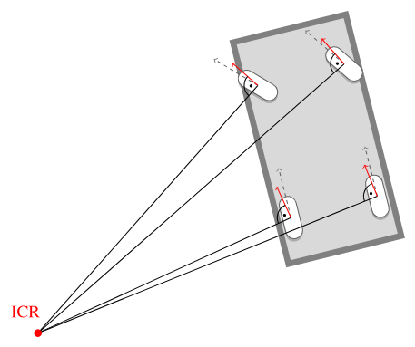

Kinematic Bicycle Model#
Geometric basis of Pure Pursuit and part of MPC. Figures — from AAD (CC BY 4.0).
With a constant front-wheel angle \(\delta\), the rear axle traces a circular arc in the plane. Lateral control = choose \(\delta\) (then SWA on the bus) so that arc matches the road you want.
Wheel steer angle vs SWA#
quantity |
meaning |
|---|---|
\(\delta\) |
front wheel angle relative to the body (model) |
SWA |
steering-column / rack angle on CAN |
They are related by a nearly constant gear ratio and a sign convention:
Golf MQB numbers in config.json: \(L \approx 2.636\) m, steer_ratio ≈ 15.7, steer_sign = -1.
Tiny numerical example
\(\delta = +5°\) (wheels turn “model-positive”).
Then \(|\mathrm{SWA}| = 15.7 \times 5° = 78.5°\), and with steer_sign = -1 the CAN command is \(\mathrm{SWA} = -78.5°\).
One degree at the wheel is about sixteen degrees at the steering wheel — that is why bag SWA looks “large”.
import math
L = 2.636 # m, wheelbase
STEER_RATIO = 15.7
STEER_SIGN = -1
def swa_from_delta_deg(delta_deg: float) -> float:
"""Wheel angle [deg] → steering-wheel angle on CAN [deg]."""
return STEER_SIGN * delta_deg * STEER_RATIO
print(swa_from_delta_deg(5.0)) # -78.5
print(swa_from_delta_deg(-5.0)) # +78.5

Left and right road wheels differ (Ackermann). The bicycle model replaces the front axle by one equivalent \(\delta\).
Why \(\tan\delta = L/R\)#


Assume rolling without lateral slip. The rear wheel velocity is along the body; the front wheel velocity is along the steered wheel. Instantaneous motion is pure rotation about the ICR (intersection of the wheel axes).
Look at the right triangle ICR–rear–front:
opposite to \(\delta\) is the wheelbase \(L\);
adjacent is the arc radius \(R\) of the rear axle.
Therefore
Solve for the three equivalent forms students must memorize:
Here \(\kappa\) is path curvature of the rear axle [1/m]. Straight road: \(\kappa = 0\) \(\Rightarrow\) \(\delta = 0\).
Worked example (by hand)#
Take \(L = 2.64\) m and \(\delta = 5° = 5\pi/180 \approx 0.08727\) rad.
So a gentle \(5°\) at the wheels is already a ~30 m radius — city-arc territory.
import math
def kappa_from_delta(delta_rad: float, L: float = 2.64) -> float:
return math.tan(delta_rad) / L
def delta_from_radius(R: float, L: float = 2.64) -> float:
return math.atan(L / R)
delta = math.radians(5)
k = kappa_from_delta(delta)
R = 1.0 / k
print(f"kappa={k:.4f} 1/m, R={R:.1f} m")
# Inverse check: radius 50 m → wheel angle
print(f"delta for R=50 m: {math.degrees(delta_from_radius(50)):.2f} deg")
Expected print roughly: kappa=0.0331, R=30.2, delta for R=50 m ≈ 3.02°.
State \((x, y, \theta)\)#
symbol |
meaning |
|---|---|
\(x, y\) |
rear-axle position in a planar world frame [m] |
\(\theta\) |
yaw (heading) [rad] |
\(v\) |
longitudinal speed [m/s] |

With no slip, the kinematic ODEs are:
Discrete step (what a simulator does)
For a small \(\Delta t\): \(x \leftarrow x + v\cos\theta\,\Delta t\), \(y \leftarrow y + v\sin\theta\,\Delta t\), \(\theta \leftarrow \theta + v\tan\delta / L \cdot \Delta t\).
import math
def bicycle_step(x, y, theta, v, delta, L=2.64, dt=0.05):
"""One Euler step of the kinematic bicycle [SI units]."""
x = x + v * math.cos(theta) * dt
y = y + v * math.sin(theta) * dt
theta = theta + v * math.tan(delta) / L * dt
return x, y, theta
# Drive 2 s at 10 m/s with +3° wheel angle — expect slow left/right turn
x = y = theta = 0.0
delta = math.radians(3)
for _ in range(40): # 40 * 0.05 s = 2 s
x, y, theta = bicycle_step(x, y, theta, v=10.0, delta=delta)
print(f"after 2 s: x={x:.2f} m, y={y:.2f} m, yaw={math.degrees(theta):.1f} deg")
Instantaneous center of rotation (ICR)#
For planar rigid-body motion there is always an ICR such that


No-slip ⇒ wheel velocity ⊥ wheel axle. Draw both axle lines; they meet at ICR. Ackermann steering is exactly “make those lines meet at one point”.
Lateral slip (preview)#
At high \(v\), tires slip sideways. The true ICR moves, and

Highway kinematics overstate curvature — next chapter.
Summary#
\(\kappa = \tan\delta / L\), \(R = 1/\kappa\).
\(\mathrm{SWA} = \texttt{steer\_sign}\cdot\delta\cdot\texttt{steer\_ratio}\).
ICR explains the geometry; slip breaks the no-slip assumption at speed.
Exercise
For \(L=2.64\) m, \(R=50\) m: compute \(\delta\) [deg] and \(|\mathrm{SWA}|\) with ratio \(15.7\).
Modify the Python
bicycle_steploop: what \(y\) do you get after 2 s if \(\delta=0\)? (Should stay ~0.)Convince yourself from the ICR figure that the bottom-left angle equals \(\delta\).
Next: Pure Pursuit